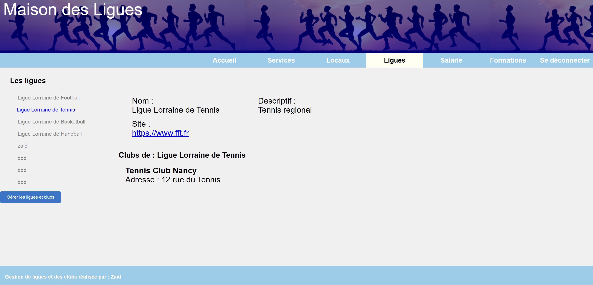
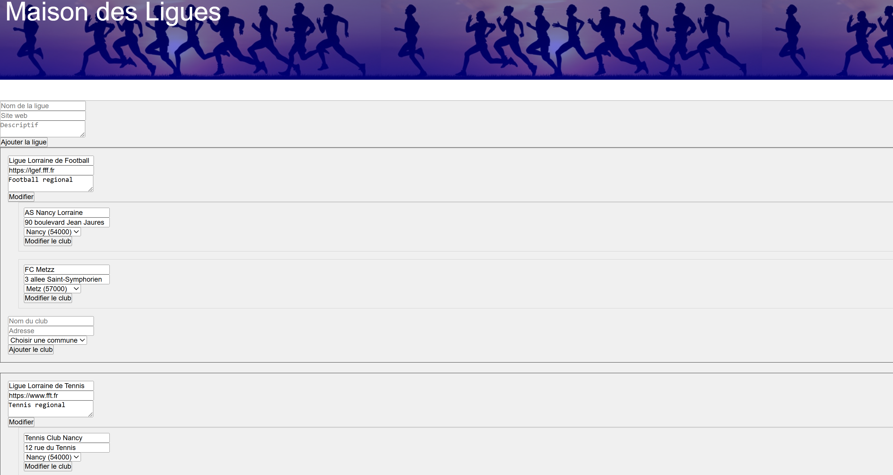
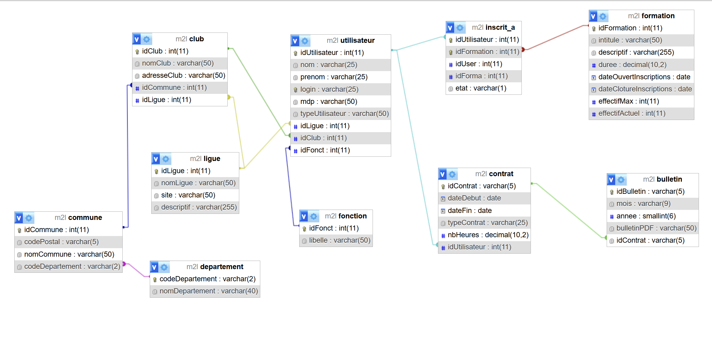
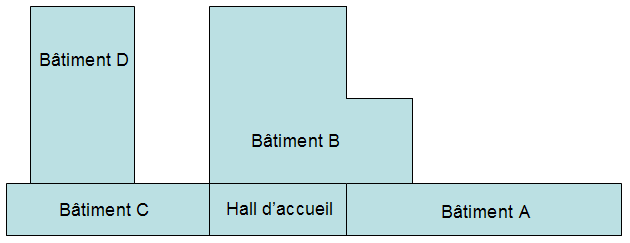

Application web PHP
M2L - Site dynamique
Application dynamique pour la Maison des Ligues permettant de consulter et gérer les ligues, clubs, utilisateurs et formations. Le projet repose sur PHP orienté objet, MySQL et une organisation MVC avec contrôleurs, vues, DAO et DTO.
Objectifs
- Transformer un site statique en application dynamique.
- Gérer les ligues, clubs et formations depuis une base MySQL.
- Mettre en place des rôles utilisateur et des droits d'accès.
Difficultés rencontrées
- Structuration MVC et séparation claire DAO / DTO.
- Gestion des formulaires de création, modification et suppression.
- Maintien de la cohérence des données entre ligues, clubs et communes.
Solutions apportées
- Création de contrôleurs dédiés par fonctionnalité.
- Requêtes SQL préparées via une connexion PDO centralisée.
- Pages adaptées aux profils secrétaire, salarié et responsable.


